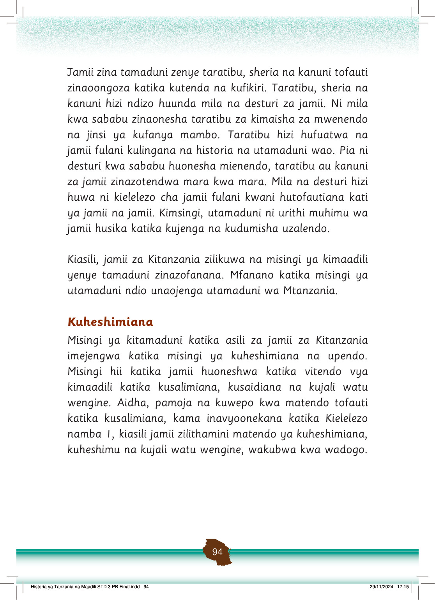

Jamii zina tamaduni zenye taratibu, sheria na kanuni tofauti zinaoongoza katika kutenda na kufikiri.
Taratibu, sheria na kanuni hizi ndizo huunda mila na desturi za jamii.
Ni mila kwa sababu zinaonesha taratibu za kimaisha za mwenendo na jinsi ya kufanya mambo.
Taratibu hizi hufuatwa na jamii fulani kulingana na historia na utamaduni wao.
Pia ni desturi kwa sababu huonesha mienendo, taratibu au kanuni za jamii zinazotendwa mara kwa mara.
Mila na desturi hizi huwa ni kielelezo cha jamii fulani kwani hutofautiana kati ya jamii na jamii.
Kimsingi, utamaduni ni urithi muhimu wa jamii husika katika kujenga na kudumisha uzalendo.
Kiasili, jamii za Kitanzania zilikuwa na misingi ya kimaadili yenye tamaduni zinazofanana.
Mfanano katika misingi ya utamaduni ndio unaojenga utamaduni wa Mtanzania.
Kuheshimiana
Misingi ya kitamaduni katika asili za jamii za Kitanzania imejengwa katika misingi ya kuheshimiana na upendo.
Misingi hii katika jamii huoneshwa katika vitendo vya kimaadili katika kusalimiana, kusaidiana na kujali watu wengine.
Aidha, pamoja na kuwepo kwa matendo tofauti katika kusalimiana, kama inavyoonekana katika Kielelezo namba 1, kiasili jamii zilithamini matendo ya kuheshimiana, kuheshimu na kujali watu wengine, wakubwa kwa wadogo.